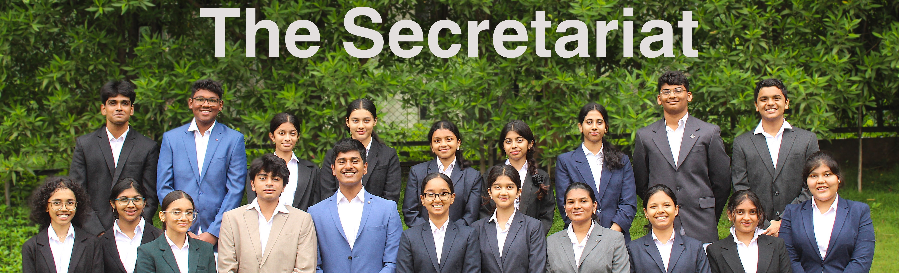

.JPG)
Yamini Tumu
Secretary-General
Yamini Tumu is a 12th-grade student studying the subjects of Maths, Economics and Commerce. Her interests are diverse, ranging from economics and international law to Kuchipudi. Though her personality is hard to sum up in a few words, some might say she is meticulous and approachable. She strongly believes in the power of a cohesive and harmonious team and hence, tries her hand at broken humor to keep the spirit going. Having consistently attended a considerable amount of MUNs in the past two years, she has developed a decent understanding of them. With this, as the Secretary-General of the DPSHMUN 2024, she warmly welcomes everyone to the conference!
.JPG)
Chanakya Gutta
Deputy Secretary-General
Chanakya Gutta, holding the post of Deputy Secretary-General, is a goal-driven and diligent student, known for his efficient networking and leadership skills. Approachable and determined, he never beats around the bush. Graduating as a student body president from his Alma Mater, Chanakya has involved himself in numerous experiences, making him an asset to this team. He has used a multitude of skills in order to execute every task to perfection and he believes in the law as a tool to shape society into a fairer one. Being a dedicated law aspirant while balancing his interests in sports and conferences, he brings a well-rounded, dynamic approach to facilitate a memorable MUN experience.
.JPG)
Sriram Lanka
Director General
Sriram Lanka is a person with a wide range of interests, both in and out of the academic field. He exudes confidence and does not discriminate with his kindness. According to him, MUN is a platform for one to present themselves and explore the depths of their leadership capabilities. To him, if the problem is the lock, interaction and collaboration are the key. This analogy, which he applies to all aspects of his life, has gotten him closer to MUNs. He hopes to relay his passion for debate and discussion to all of the participants, and eagerly looks forward to the exhilarating interactions fostered through this conference!
.JPG)
Yutika Kumar
Charge D' Affairs
Currently a 12th grader, Yutika Kumar is a Humanities student aiming to pursue law in the near future. After having joined the circuit over half a decade ago, she’s gone on to participate in every capacity possible, from delegate to Executive Board member. The experience she has gained from being involved in the Student Council, along with her organized approach and her diligence, have ensured that her strive for excellence does not go unfulfilled. Parallelly, her passion for politics, law and the arts keep her busy. She is grateful to have been given the opportunity to serve as the Charge D’ Affairs for the 2024 edition of the DPSHMUN, and hopes to make it an incredible conference.
.JPG)
Venkata Kashvi M.
Chief of Staff
Venkata Kashvi M. is a person who believes in talking first and thinking next, which lies in contrast to her calm composure. She spends most of her time with her nose buried in books of various genres and playing music at a low volume. Kashvi is an adventurous spirit, dabbling in all sorts of sports, with a particular love for basketball. Despite being teased about her height, she remains undeterred and welcomes challenges. Despite all, she is an ambivert who avoids conflict, yet would not give up a chance to raise her voice for what she believes in. This resolution imbibed in her a passion for Model United Nations (MUN) conferences a year ago and she has excelled in them. She hopes all of you are ready to learn and wishes everyone all the best.
.JPG)
Tishya Tushar Mukarji
Under-Secretary-General of Photography
Introducing Tishya, the UnderSecretary-General of Photography at the DPSHMUN 2024. With a passion for visual storytelling, Tishya loves capturing the unique stories and vibrant energy of events like this. Beyond a love for photography, she enjoys exploring the outdoors, painting, and capturing the beauty of nature. She is also a music enthusiast and enjoys playing the guitar in her free time. Excited to capture the journey of the delegates, from heated debates to inspiring resolutions, Tishya is here to create lasting memories—so smile for the camera!
.JPG)
Rujula Yanamandra
Under-Secretary-General of Policy
Rujula Yanamandra is a 11th grader studying Humanities. Her leadership capabilities reveal themselves through her involvement in various extracurricular events and activities. With lists and lists on her Notes app for absolutely everything, she approaches every task with the aim of perfection. She loves interacting with new people and working in teams, always having roles which give her the opportunity to do what she loves most. Possessing a love for intellectual debates and controversial discussions, she enters every conversation with an open mind.
.JPG)
Rishika Agrawal
Under-Secretary-General of Policy
Rishika Agrawal, a student at Delhi Public School, Hyderabad, stands out with her active participation in over 15 Model United Nations (MUN) conferences. Besides her studies, she shines in dance, and loves diving deep into murder mystery novels to keep herself engaged. Rishika’s varied interests show a great balance between education and personal growth, highlighting her dedication to global issues and creativity.
.JPG)
Siddharth Gumma
Under-Secretary-General of Delegate Affairs
This year’s Under Secretary-General of Delegate Affairs, Siddharth Gumma is a highly experienced and approachable leader in the MUN community. Known affectionately as "Gumma," he has an exemplary track record as a delegate, Organizing Committee member, and Secretariat member. His extensive experience and proven success in these roles make him a valuable asset to the conference. Having excelled as the USG of Delegate Affairs last year, he returns with a deep familiarity to the DPSHMUN. He will play a crucial role throughout the event, from delegate allocation to the Closing Ceremony. His commitment to supporting and engaging with every delegate ensures a smooth and enriching experience for all. With his blend of expertise and approachable nature, Siddharth is set to thrive once again and be a pillar of support during the conference.
.JPG)
Aarna Joshi
Under-Secretary-General of Delegate Affairs
Aarna Joshi is a 11th-grade student at Delhi Public School, Hyderabad with a strong academic focus. She loves reading books, often immersing herself in different genres. In her free time, Aarna enjoys cycling, which keeps her active and energetic. Additionally, she has a passion for debate, engaging in thoughtful discussions and honing her public speaking skills. Aarna's diverse interests make her a well-rounded and dynamic individual. Her kind and approachable nature make her fit for her role as the Under Secretary-General of Delegate Affairs.
.JPG)
Kushaal Reddy Aramati
Under-Secretary-General of Logistics
Driven by an insatiable curiosity and a deep passion for diverse disciplines, Kushaal has immersed himself in a variety of fields, from logistics and marketing to negotiation and social communication. As an MPC student with ambitions to study abroad, he has actively engaged in numerous events, continuously seeking to expand his knowledge and enhance his skills. In his role as Under Secretary-General of Logistics for DPSHMUN 2024, Kushaal is dedicated to applying his expertise to ensure a seamless and impactful conference experience. His commitment to excellence and his proven track record in event organization position him to make a significant contribution to the success of the MUN, showcasing his abilities and delivering an exceptional event.
.JPG)
Aarushi Mohindru
Under-Secretary-General of Logistics
With adaptability and resilience as her middle names, Aarushi Mohindru is an achiever who not only believes in doing things right, but also doing the right thing. She epitomizes the adage that the only thing constant is change. Having moved 11 schools across 8 cities, soaking in and relishing new experiences is her second nature. She dives deep into this treasure trove of experiences and expresses herself with confidence and candor. Attention to detail without losing sight of the big picture is her forte, which lends credence to her sharp organizational skills. A perfectionist to the core, she brings in ownership and diligence in every responsibility assigned to her. As the Under Secretary-General of Logistics for this edition of the DPSHMUN, she promises to integrate all the behind the scene waypoints and bring to the fore a resource-rich conference.
.JPG)
Chilukuri Nainika Reddy
Under-Secretary-General of Hospitality
Nainika, an MPC student with a flair for design, has consistently demonstrated her artistic talent and attention to detail throughout her academic journey. Known for her warm-hearted nature and exceptional communication skills, she is one of the most approachable and kind-hearted individuals you’ll meet. As the Under Secretary-General of Hospitality for DPSHMUN 2024, Nainika is dedicated to ensuring every detail is meticulously managed and that the event runs smoothly. Her commitment to excellence and her focus on creating a welcoming and organized environment make her a key asset in achieving the success of the conference.
.JPG)
Tavishi Saha
Head of Organizing Committee
Tavishi Saha of the 11th grade is the Head of the Organizing Committee for the DPSHMUN 2024. Considering herself privileged to have been selected for this position, she believes it does wonders for getting an insight about the workings of an MUN. She strives to ensure that the conference ends as the most flawless one possible. Tavishi loves to be involved in projects with groups, showcasing her brilliant teamwork skills. If not in a group setting, you’ll see her engrossed in trying to master a recipe, or singing her heart out. She’s excited for this event, as it brings her a new experience, and she sincerely hopes that everyone enjoys it.
.JPG)
Sriratna Mauktika Hasini
Head of Organizing Committee
Mauktika is a Class 12 student, and the Head of the Organizing Committee for this year’s DPSHMUN. Excited to be part of the Secretariat, she is committed to ensuring that the event runs smoothly and provides an enriching experience for all participants. She thrives in environments that require event planning and bringing innovative ideas to life. Outside of her MUN responsibilities, she enjoys working on creative projects, engaging in various volunteer activities, playing football, and keeping up with the latest in Formula 1.
.JPG)
Ayush Bhatt
Under-Secretary-General of Technology
Meticulous and dependable, Ayush Bhatt is an MPC student in the 12th grade, with ambitions of changing the way people view technology. Bringing years of experience and expertise in web development, along with a passion for perfection, to the table, he believes himself to be fit for the role of Under Secretary-General of Technology. Along with shouldering the responsibilities of being the Head Boy, he takes pride in being a part of the Secretariat for this year’s DPSHMUN, considering both to be ways to give back to his school. When he isn’t occupied with computers, he is most likely to be found engaging in a game of chess. With his skills and a team, he hopes to breathe life into the technological aspects of this conference, and wishes all the participants the very best.
.JPG)
Thwisha Munjampally
Under-Secretary-General of Design
An aspiring psychologist, Thwisha is currently pursuing her 12th grade in the Humanities. A zealous and talented designer, she vows to never back down from an opportunity to put her passion and experience to good use. Having been a student of Delhi Public School, Hyderabad from the very beginning of her schooling career, she is beyond elated to have been given the opportunity to once more contribute to the school by serving as the Under Secretary-General of Design for the DPSHMUN 2024. Understanding the importance and responsibilities that come with this role, she hopes to create a positive impact on the conference and ensure that her eye for detail and artistry resonate with everyone.
.JPG)
Michelle Jose
Under-Secretary-General of Design
Michelle, an energetic and diligent 12th grader, discovered and honed her ever-increasing passion for designing through her work with a non-profit organization. She shares her artistic inclination with an immense interest in sports, dance and art, and is honored to have been entrusted with the position of the Under Secretary-General of Design for DPSHMUN 2024. Aware of the responsibilities this role brings, she looks forward to collaborating zealously with an exceptionally talented and carefully curated team, and hopes to deliver the best results to ensure the smooth functioning and success of this conference.
.JPG)
Podisetty Sanjana Kalyani
Under-Secretary-General Of Conference Affairs
Sanjana, studying in 12th grade, is an avid photographer who deeply enjoys painting, writing and dancing. An experienced debater and sure to be seen in most philanthropic activities, she is known to be extraordinarily creative and hardworking. She considers herself honored to have received the post of Under Secretary-General of Conference Affairs for the 2024 edition of the DPSHMUN. Aware of the responsibilities she has taken along with the post, she is determined to live up to expectations and excited to work with a dedicated team to ensure that the conference takes place smoothly, ultimately resulting in the success of the DPSHMUN.
.JPG)
Samiksha Reddy Nandineni
Under-Secretary-General Of Marketing
A creative soul with a passion for painting, music and drumming, Samiksha effortlessly blends art and strategy. Thriving in corporate environments, she is a lively team player, always eager to brainstorm innovative ideas. Her enthusiasm and dedication serve as a great asset to the Secretariat and she looks forward to serving as the Under Secretary-General of Marketing for DPSHMUN 2024.
.JPG)
Stephen Arya
Under-Secretary-General Of Marketing
Stephen Arya is currently in 12th grade, studying Humanities. Known to be enthusiastic and energetic, his time is well-spent, immersed in his passion for football, music and drawing. As the Under Secretary- General of Marketing for the 2024 edition of the DPSHMUN, he remains grateful for having been given the opportunity to serve the school, and aims to deliver the results required of him, hoping to play a positive role in ensuring the success of this MUN.